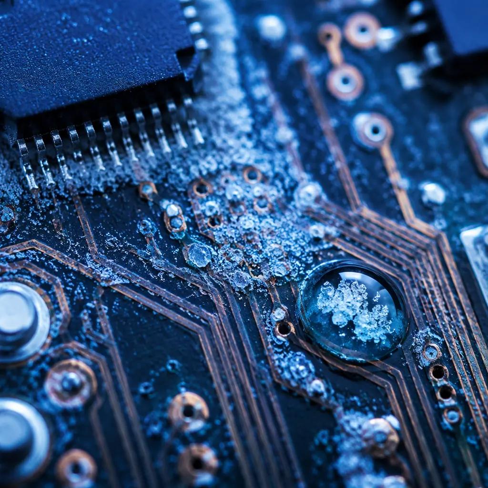
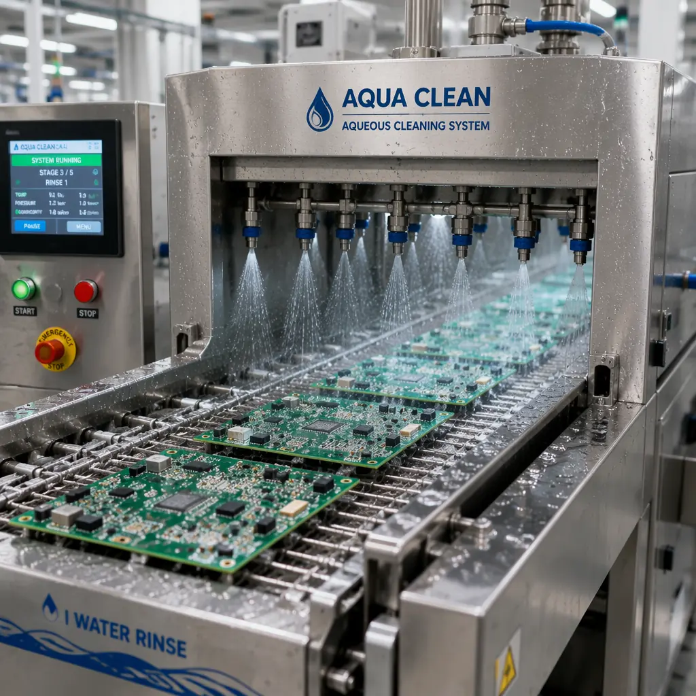

Ionic contamination on a PCB surface is invisible to the naked eye — a residue layer of chloride ions, sulfate ions, weak organic acids from flux activators, and sodium from handling — but under the right conditions of humidity, temperature, and DC bias voltage, these invisible residues become electrochemical migration highways. A single ionic contamination-related dendritic short can take 50 to 500 hours of field operation to manifest, passing every functional test at the factory, only to fail weeks after deployment. For high-reliability electronics — medical implants, aerospace avionics, automotive safety systems — cleanliness testing is not a nice-to-have: it is a pass/fail gate that determines whether a PCB lot ships or is scrapped.
Huaxing PCBA maintains IPC Class 3 cleanliness standards as our baseline for all PCB fabrication, not just high-reliability programs. Every production lot undergoes ROSE (Resistivity of Solvent Extract) testing per IPC-TM-650 2.3.25, with biweekly SIR (Surface Insulation Resistance) verification per IPC-TM-650 2.6.3.3 on process coupons. Our aqueous cleaning system uses 18 MΩ·cm deionized water at 60°C with inline conductivity monitoring, achieving post-clean ionic contamination levels consistently below 1.0 μg/cm² NaCl equivalent — well within the IPC-J-STD-001 Class 3 limit of 1.56 μg/cm². Full test data is provided with every shipment.

What Is Ionic Contamination — and Why Does It Cause PCB Failures?
Ionic contamination refers to electrically conductive residues left on a PCB surface after manufacturing processes: fabrication (etching chemicals, plating bath dragout), assembly (flux activators, solder paste residues), and handling (fingerprint salts, packaging materials). When these ionic residues combine with moisture and a DC voltage potential between adjacent conductors, an electrochemical cell forms:
Moisture Absorption Creates an Electrolyte
At relative humidity above 60% RH, the PCB surface adsorbs 3-5 monolayers of water molecules. The ionic residues dissolve into this water layer, creating a conductive electrolyte film between adjacent traces or pads with different voltage potentials. This is the critical threshold — below 60% RH, electrochemical migration is negligible; above 85% RH, it accelerates by a factor of 10×. Our conformal coating guide covers humidity protection strategies.
DC Bias Drives Metal Ion Migration
With a voltage potential present (as low as 5V DC for closely-spaced conductors), the positively-biased conductor (anode) begins dissolving into the electrolyte film. Metal ions (Cu⁺, Sn²⁺, Ag⁺) migrate through the water layer toward the negatively-biased conductor (cathode). The migration rate is proportional to voltage gradient (V/mm) and ion concentration.
Dendrite Growth Creates a Resistive Short
At the cathode, metal ions reduce back to metallic form, depositing as microscopic filaments that grow back toward the anode. Over hours to days, a dendritic bridge forms — a metal filament connecting the two conductors. Resistance drops from >10⁹ Ω (open) to <10⁶ Ω, creating a leakage path. As the dendrite thickens, resistance drops further to <100 Ω, becoming a hard short circuit. Our failure analysis guide shows SEM images of dendritic growth patterns.
The Three Core Cleanliness Testing Methods
Cleanliness testing answers one question: "Is this PCB clean enough for its intended operating environment?" Three complementary methods provide the answer, each with different strengths and limitations:
ROSE (Resistivity of Solvent Extract) — IPC-TM-650 2.3.25
The industry-standard bulk cleanliness test. The PCB is immersed in a 75% isopropyl alcohol / 25% deionized water solution (or a proprietary test solution), which dissolves ionic residues from the entire board surface. The change in solution resistivity is measured and converted to an equivalent NaCl contamination level in μg/cm² of board surface area. ROSE is fast (5-15 minutes per test), inexpensive, and suitable for 100% lot testing. IPC-J-STD-001 limits: Class 1 (general): <3.1 μg/cm² | Class 2 (dedicated service): <1.56 μg/cm² | Class 3 (high reliability): <1.56 μg/cm². Our IPC class comparison guide covers all cleanliness differences between classes.
SIR (Surface Insulation Resistance) — IPC-TM-650 2.6.3.3
Unlike ROSE which measures total ionic contamination, SIR directly tests whether that contamination actually causes electrical leakage under conditions that simulate field operation. A standardized comb-pattern test coupon is subjected to 85°C / 85% RH with 50V DC bias for 168 hours, with insulation resistance measured continuously. Pass criteria: resistance must remain above 10⁸ Ω (100 MΩ) throughout the test without any excursions below. SIR is the definitive test for process qualification — it validates that the entire fabrication and assembly process (flux chemistry, cleaning parameters, reflow profile) produces electrically reliable boards. See our PCB testing guide for SIR coupon specifications.
Ion Chromatography (IC) — IPC-TM-650 2.3.28
ROSE tells you how much contamination exists; ion chromatography tells you exactly what that contamination is. The solvent extract from the ROSE test is injected into an IC system that separates and quantifies individual ionic species: chloride (Cl⁻), bromide (Br⁻), sulfate (SO₄²⁻), nitrate (NO₃⁻), weak organic acids (WOAs) from flux — adipic, succinic, glutaric, and malic acids — and cations like sodium (Na⁺), potassium (K⁺), ammonium (NH₄⁺), and calcium (Ca²⁺). IC is essential for root-causing contamination sources: high chloride = inadequate rinsing after HASL flux; high WOAs = insufficient cleaning after no-clean solder paste; high sulfate = plating bath residue. IC is done on a sampling basis (1-2 coupons per shift) rather than 100% due to its cost and time (2-4 hours per sample).
Laboratory Data: Analysis of 200 PCB lots across 5 fabrication facilities showed that ROSE alone misses approximately 12% of lots that fail SIR testing — these lots have total ionic contamination within limits, but the contamination is concentrated in specific high-risk areas (under components, in vias) that ROSE's bulk extraction averages out. This is why IPC recommends SIR as the process qualification method and ROSE as the ongoing process control method — they are complementary, not redundant.
Common Sources of Ionic Contamination and How to Control Them
Preventing ionic contamination is more cost-effective than detecting it after assembly. The six primary sources of ionic residues in PCB manufacturing are:
| Source | Ionic Species | Typical Level Without Cleaning | Control Method |
|---|---|---|---|
| Flux Activators (rosin, no-clean, water-soluble) | Weak organic acids (adipic, succinic, abietic), halides | 3-15 μg/cm² | Aqueous cleaning: 18 MΩ·cm DI water at 50-65°C, 40-60 psi spray pressure, saponifier for rosin fluxes |
| Solder Paste Residues | Chlorides, bromides, organic acid activators | 2-8 μg/cm² | Match cleaning chemistry to paste flux type; verify paste manufacturer ionic cleanliness spec |
| Plating Bath Dragout (ENIG, HASL, immersion tin) | Sulfates, chlorides, cyanides, thiourea | 1-5 μg/cm² before rinse | Cascade rinse with conductivity monitoring on final rinse stage (<5 μS/cm) |
| Etching Chemistry Residues | Ammonium chloride, cupric chloride, sulfates | 2-10 μg/cm² before rinse | Alkaline etch with post-etch neutralizing rinse; verify pH neutral on board surface |
| Fingerprint Salts (handling) | Sodium chloride, potassium, amino acids | 0.5-3 μg/cm² per touch | Glove protocol: nitrile gloves changed every 2 hours; no bare-hand contact with board surface |
| Tap Water in Rinse Process | Calcium, magnesium, chloride, carbonate | 2-6 μg/cm² if tap water used | Final rinse must use DI water ≥10 MΩ·cm; inline conductivity sensor alarms at >5 μS/cm |

Cleanliness Requirements by Application: What Your Product Actually Needs
Not every PCB needs Class 3 cleanliness. The appropriate cleanliness level depends on the operating environment and consequences of failure. Specifying the right level avoids both under-cleaning (field failures) and over-cleaning (unnecessary cost):
General Electronic Products — Consumer Electronics, Toys, LED Lighting
ROSE limit: <3.1 μg/cm² NaCl equivalent. Cleanliness requirement: no-clean flux residue is acceptable if validated by SIR for the specific flux chemistry and reflow profile. Conformal coating not required. Operating environment assumption: indoor, controlled humidity, no condensing moisture. SIR may be waived for Class 1 if manufacturer has historical reliability data for the specific materials set. See our consumer electronics PCB guide for typical cleanliness specifications.
Dedicated Service Electronics — Industrial Controls, Telecom Infrastructure, Automotive Non-Safety
ROSE limit: <1.56 μg/cm² NaCl equivalent. Cleaning required unless the flux system has been SIR-qualified for Class 2 with the specific PCB design (minimum conductor spacing, maximum voltage). Conformal coating recommended for high-humidity installations. SIR: process qualification required, ongoing process control via ROSE at minimum 1 lot per shift. Our industrial control PCB guide covers the environmental exposure assumptions.
High-Reliability Electronics — Medical Implants, Aerospace Avionics, Automotive Safety (ASIL C/D)
ROSE limit: <1.56 μg/cm² NaCl equivalent (same numeric limit as Class 2, but much stricter verification). Key difference: Class 3 requires SIR testing on every process change (not just initial qualification), including flux lot changes, cleaning chemistry supplier changes, or reflow profile adjustments. No-clean flux without cleaning is explicitly prohibited per IPC-J-STD-001 §8.3.1. Ionic contamination measurement by ion chromatography required at process qualification and after any significant process change. Conformal coating mandatory for assemblies exposed to condensing humidity. Our medical device PCB guide and aerospace PCB guide detail the full cleanliness documentation package for regulated industries.
Cost Insight: Adding aqueous cleaning after SMT assembly adds approximately $0.15-0.30 per board in cleaning chemistry, DI water, equipment depreciation, and labor — roughly 2-5% of a typical PCB assembly cost. The cost of a single field failure caused by ionic contamination in a Class 3 application: $50,000-500,000 in investigation, recall, and liability. For high-reliability electronics, skipping cleaning is the most expensive decision you can make.
Process Control: Building Cleanliness into Production
A robust cleanliness program is not about testing every board — it is about controlling every process variable so that cleanliness is a predictable output, not a surprise. The key elements:
Incoming PCB Cleanliness Verification
Bare PCBs from fabrication must arrive clean. Specify ROSE testing per IPC-6012 as a shipment acceptance criterion: <1.56 μg/cm² for Class 3 bare boards. Random sampling of 1 board per lot for ion chromatography to verify the fabrication cleaning process is controlling specific ion species, not just total ionic content. Our incoming quality inspection guide includes a cleanliness verification section.
Cleaning System Monitoring — Not Just "Set and Forget"
Aqueous cleaning systems need continuous monitoring: DI water resistivity (alarm at <10 MΩ·cm), wash solution conductivity (trending upward indicates chemistry depletion), rinse water conductivity (alarm at >5 μS/cm), and conveyor speed verification (monthly calibration). A cleaning system running with depleted DI resin cartridges is producing boards with higher ionic contamination than un-cleaned boards — the contaminated rinse water becomes the contamination source.
SIR Process Coupons — The Early Warning System
Place SIR test coupons on the production conveyor alongside actual PCBs. Test one coupon per shift (or per cleaning chemistry batch). A gradual downward trend in insulation resistance, even if still above the 10⁸ Ω pass limit, is an early warning that the cleaning process is drifting — DI water quality degrading, wash chemistry aging, or conveyor speed increasing. Address the trend before it becomes a failure. See our pre-shipment inspection guide for trending techniques.
Handling Protocol Enforcement
Post-cleaning, boards must never be touched with bare hands. Nitrile gloves, changed every 2 hours minimum or immediately upon visible contamination. Boards stored in sealed ESD bags with desiccant and humidity indicator cards if assembly-to-conformal-coating interval exceeds 8 hours. Our ESD packaging guide covers the full storage and handling requirements.
Summary: Cleanliness Is a Process, Not a Test
Ionic contamination failures are insidious — they pass every functional test at the factory, only to fail in the field after weeks or months of operation. The defense against them is not better testing at the end of the line; it is process control throughout the line. ROSE testing catches bulk contamination issues. SIR testing validates that the complete manufacturing process produces electrically reliable boards. Ion chromatography diagnoses the specific contamination sources when either test shows a problem.
At Huaxing PCBA, cleanliness is a production parameter, not a post-production inspection result. Our DI water system is continuously monitored with automated alarms. Every shift runs a SIR process coupon. Every shipment lot includes a ROSE test certificate. For Class 3 programs, we add ion chromatography analysis on bare PCBs and assembled boards, with full ionic species quantification. Use our supplier audit checklist to verify your current partner's cleanliness program, or contact our engineering team to discuss cleanliness requirements for your specific application.